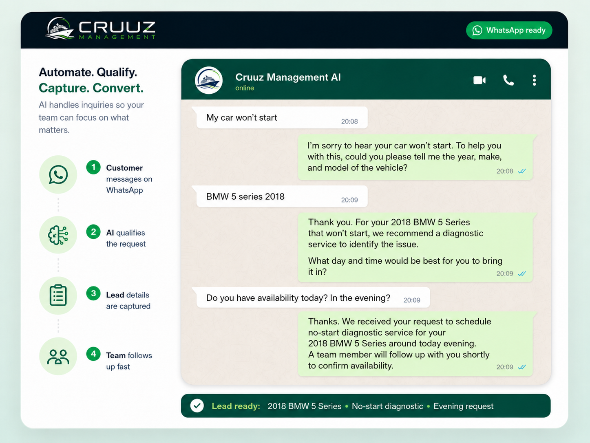

Instant WhatsApp response
Automatic replies help customers feel heard immediately, even when your team is busy.
WhatsApp automation for auto businesses
Cruuz Management helps auto repair shops, mechanics, and service businesses respond to every customer instantly, qualify leads, and book jobs automatically through WhatsApp.
We build systems that work even when you don’t.

Instant responses when customers message after hours.
Customer details, vehicle info, and service requests organized for your team.
Currently focused on automated WhatsApp messaging systems only.
What we do
Every system is customized to help your business answer faster, collect the right details, and send your team a clear lead without the usual back-and-forth.
Automatic replies help customers feel heard immediately, even when your team is busy.